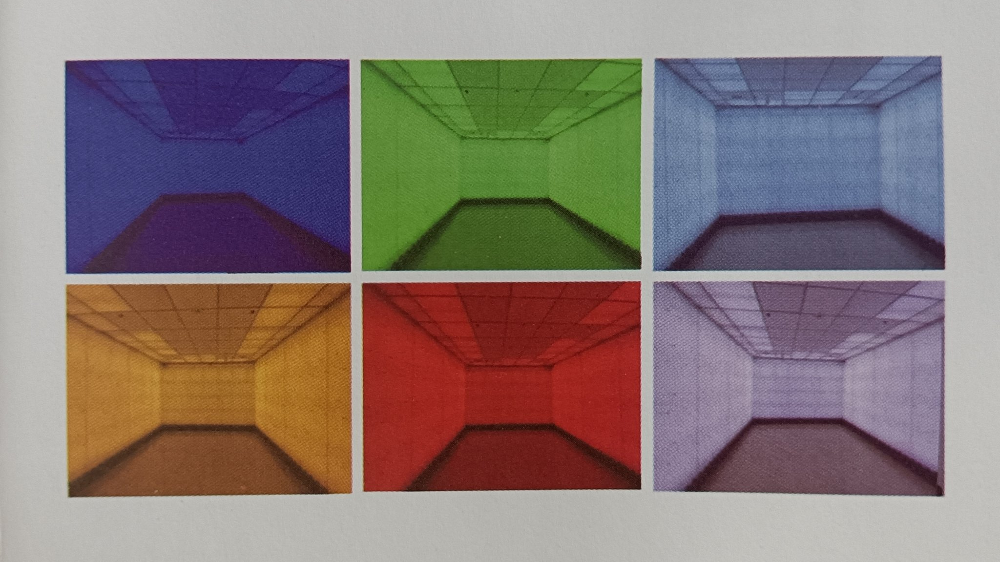
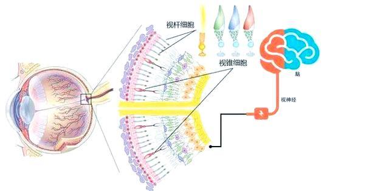

炽烈已极
@AnIncandescence
@yumeng0721 在医院有做过一种（？）照着躺沙发上放音乐睡觉，不过感觉没什么用x


Meng
@yumeng0721
光照治疗系统（全光谱光环境精神干预系统）介绍
光照治疗系统（全光谱光环境精神干预系统）集现代光生物学、心理学和精神医学的最新研究成果，已通过国内临床验证，为心理光疗提供科学、有效和安全的治疗解决方案，具有选取无害光谱成分、方便易用、可持续效果以及与其他治疗方式结合等多项优势。 https://t.co/WW3S8nPLZB